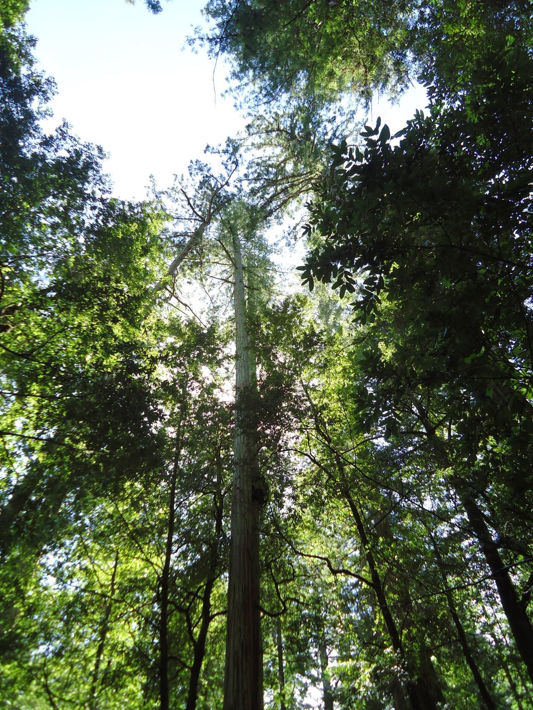
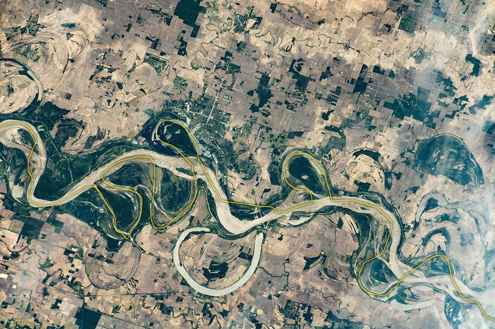
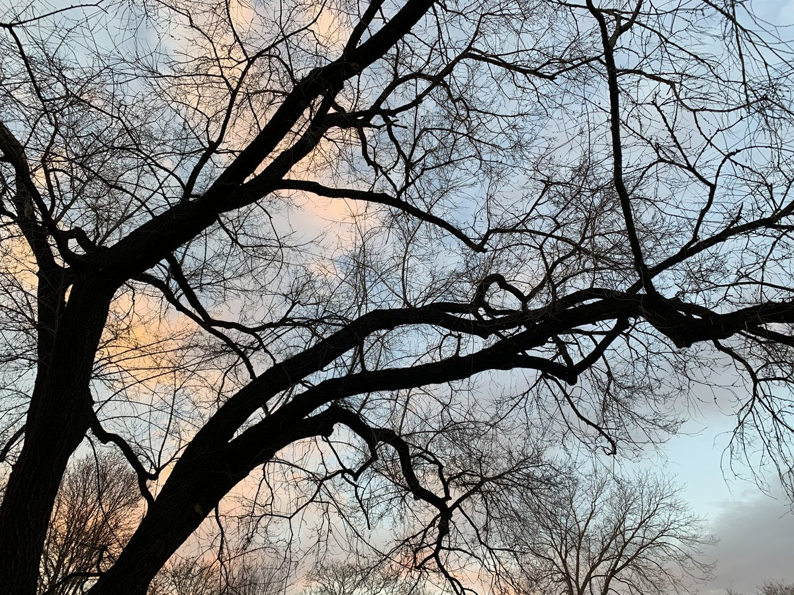

A line is the simplest and most essential element of art: a mark that shows length and direction. Lines can guide your eye to a focal point, define shapes, or suggest movement, and they appear in photographs whether or not the photographer planned them. Look at the six kinds of line below.



Real photographs. Every photograph in this lesson uses at least one of these line types, whether the photographer noticed it or not. Sources: Tomwsulcer/Wikimedia Commons (CC0); NASA; National Archives via Wikimedia Commons (public domain); Kevin Skow/NOAA via Wikimedia Commons (public domain).
Digital artists often use invisible lines: lines you cannot actually see but that still organize a composition. The best-known example is the rule of thirds. Instead of placing your subject dead center, imagine a grid of two vertical and two horizontal lines dividing the frame into nine equal parts. The four points where those lines cross are strong spots for your subject.
A photographer using the rule of thirds places the subject near one of those four crossing points instead of in the middle of the frame. This one shift makes a composition feel more dynamic and intentional. Look at the real photograph below.
Gustave Le Gray (French, 1820–1884), Brig on the Water, 1856. Albumen silver print. Metropolitan Museum of Art, public domain. Source: metmuseum.org. Mentally divide the frame into thirds: the small ship sits off to one side rather than dead center, near where the vertical third-lines would fall, exactly the kind of placement the rule of thirds predicts will feel strongest.
In art, space is not outer space. It is the area between and around objects, and artists use it to show distance, size, and depth, sometimes creating the illusion that you could step right into the photograph.
Positive space
The main subject of the photograph: the part that draws the viewer's attention. An elephant filling most of the frame is the positive space.
Negative space
The area surrounding the subject. It does not have to be dark or empty; it can be any color or tone. Silhouetted branches against a colorful sky make the branches the positive space and the sky the negative space.


Look back at Le Gray's Brig on the Water in Part 2. The small ship is the positive space, the part your eye locks onto first. The huge, calm sky and sea around it are the negative space: empty of detail, but doing real work, since that emptiness is what makes the tiny ship feel so alone on the water.
Photographers can also create the illusion of depth using one-point perspective, which makes a flat image feel three-dimensional. The tool that does most of the work is the leading line: a line that guides the viewer's eye, often into the distance. A path stretching away from the camera, its edges narrowing toward a single point, can make you feel like you could walk right into the picture.

A camera records everything in front of it, but a photographer decides what matters. Line and space are two of your most powerful decisions: where you let the eye travel, and what you leave empty so the subject can breathe. Every photo you take from here forward should answer the question, "where do I want the eye to go?"